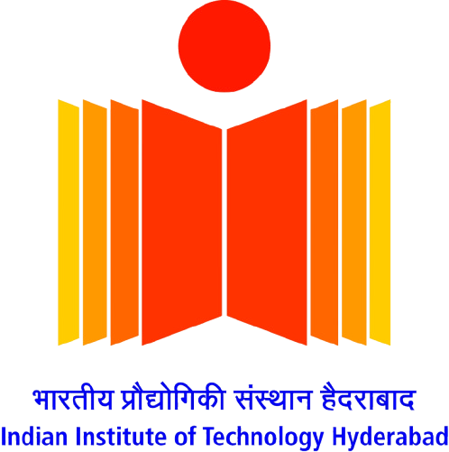
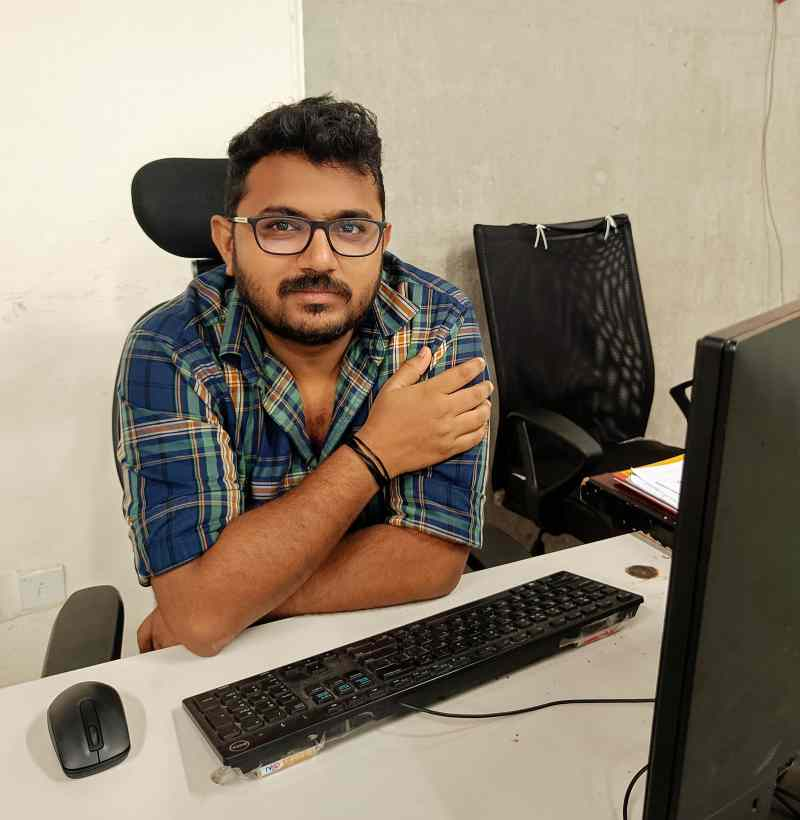
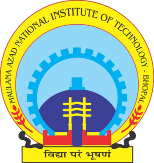
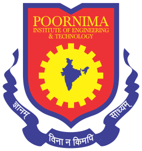

Ph.D. in Environmental Engineering
Indian Institute of Technology Hyderabad

I'm Vikas Kumar Meena, a Ph.D. research scholar in environmental engineering at the Indian Institute of Technology Hyderabad. I use environmental models and data to study the fate and transport of pollutants in the ocean.
Start a conversation ↗
Vikas Kumar Meena · Environmental researcherMy work examines the fate and transport of persistent pollutants, especially PCBs and mercury. I use global environmental and ocean models to study long-range transport and ocean partitioning, alongside field sampling to understand atmospheric processes.
Indian Institute of Technology Hyderabad

Maulana Azad National Institute of Technology, Bhopal

Poornima Institute of Engineering and Technology, Jaipur
